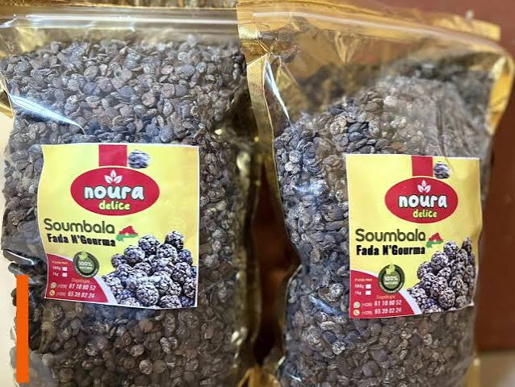
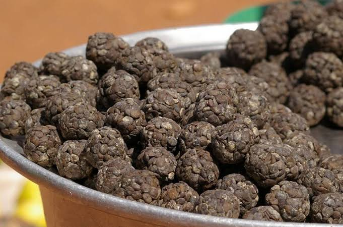

100% Naturel & Traditionnel
Découvrez un soumbala authentique, préparé selon un savoir-faire ancestral, sans additifs ni conservateurs. Une explosion de saveurs pour toutes vos sauces.
Nos Produits
Des formats adaptés à tous vos besoins, du quotidien aux grandes occasions.
Nos Engagements
Aucun additif, aucun conservateur. Un produit pur, issu de graines soigneusement sélectionnées.
Une sélection rigoureuse et un contrôle qualité à chaque étape de la fabrication.
Préparation dans un environnement propre et respectant les normes sanitaires.
Un produit séché et conditionné pour une conservation longue durée sans perdre ses arômes.
Une recette transmise de génération en génération, gage d'authenticité et de goût unique.

Notre Histoire
Le soumbala est un condiment traditionnel africain obtenu à partir des graines du néré (Parkia biglobosa), un arbre emblématique des savanes du Burkina Faso. Récoltées à maturité, les graines sont lavées, bouillies longuement, fermentées puis séchées et façonnées à la main.
Notre savoir-faire perpétue cette tradition avec exigence : sélection des meilleures graines, fermentation maîtrisée et séchage naturel au soleil. Le résultat est un soumbala riche en goût, en protéines et en fer, idéal pour vos sauces, riz et plats mijotés.
Témoignages
« Un goût authentique que je n'avais pas retrouvé depuis des années. La qualité est au rendez-vous, je recommande vivement ! »
« Livraison rapide et produit très bien emballé. Mon riz au soumbala a un goût exceptionnel. Merci pour ce savoir-faire ! »
« Enfin un soumbala vraiment naturel, sans odeur chimique. Toute ma famille en raffole. Je commande régulièrement. »
Questions fréquentes
Contactez-nous
Une question, une commande spéciale ou un besoin en gros ? Écrivez-nous, nous répondons rapidement.
